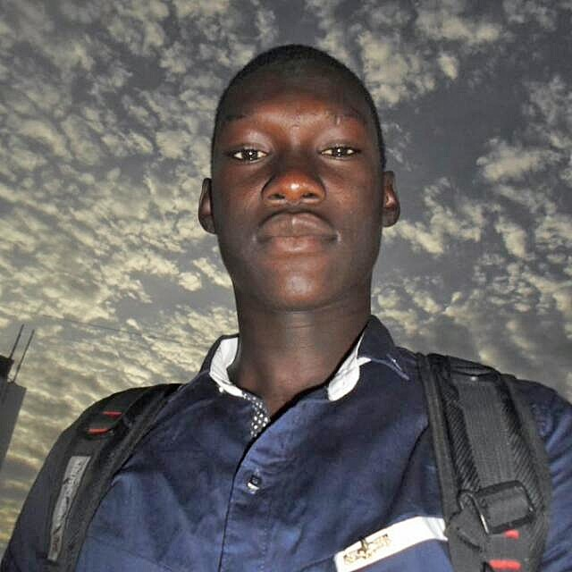
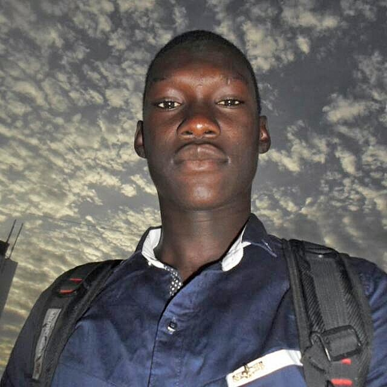

Suivi Médical
- Développement d’une plateforme web pour la gestion du suivi médical des patients
- Contact avec le client et analyse de ses besoins.
- Mise en place du projet et développement en autonomie.
 

Nom : KHOUMA AL hussein
Age : 27 ans
Ville actuelle : Rufisque
Hobbies : jeux-vidéo, football, tuto
En tant que jeune développeur web, je suis à la recherche d'une opportunité professionnelle après avoir consacré 8 mois au télétravail au sein de l'agence web SUNUCODE. Cette expérience significative m'a permis de développer une véritable autonomie et une confiance en mes capacités, même en étant fraîchement diplômé en licence informatique. Elle a joué un rôle crucial dans la consolidation de mes acquis universitaires et m'a offert l'occasion d'élargir considérablement mon éventail de compétences.
Actuellement, je saisis l'opportunité qui m'est offerte pour poursuivre mon apprentissage et explorer de nouvelles technologies. Mon attention se porte particulièrement sur l'expansion de mes compétences en développement mobile, notamment à travers la maîtrise de Flutter et Ionic. Parallèlement, je m'investis également dans l'amélioration de ma maîtrise des frameworks JavaScript et Java. Cette démarche reflète ma volonté constante de rester à la pointe des avancées technologiques et de diversifier mon expertise pour répondre aux besoins évolutifs du secteur..
Après cette première expérience de stage, j'ai enchaîné avec un second stage chez MASCO, qui s'est étendu sur une période enrichissante d'1 an et 3 mois. Ce stage s'inscrivait dans le contexte de mon projet de Master 2, orienté vers l'informatique avec une spécialisation en génie logiciel. L'objectif de cette démarche était l'achèvement de mon diplôme de Master 2 en informatique, consolidant ainsi ma compréhension et mon expertise dans le domaine du génie logiciel.
En outre, mon autonomie se démarque comme l'une de mes principales forces. Mon expérience m'a conféré la compétence de prendre des décisions éclairées dans le but d'optimiser les projets de manière exhaustive, afin de répondre au mieux aux attentes du client. Mon engagement envers l'optimisation du code est une de mes priorités, et je veille à conduire les projets de bout en bout avec rigueur. J'ai forgé une habitude de travail en autonomie, assumant pleinement la responsabilité de mes choix et de mes actions. Cette qualité se manifeste particulièrement dans ma capacité à superviser tous les aspects techniques de la création d'une application, englobant aussi bien la phase de conception que le développement Front-End et Back-End, et jusqu'à la gestion continue lors de la phase de maintenance.
AVRIL -
OCTOBRE
2020
AVRIL -
OCTOBRE
2020
JANVIER 2020
à
OCTOBRE 2021
JANVIER 2017
à
JANVIER 2020
Juillet 2016
Je suis disponible à
Dakar et ses alentours